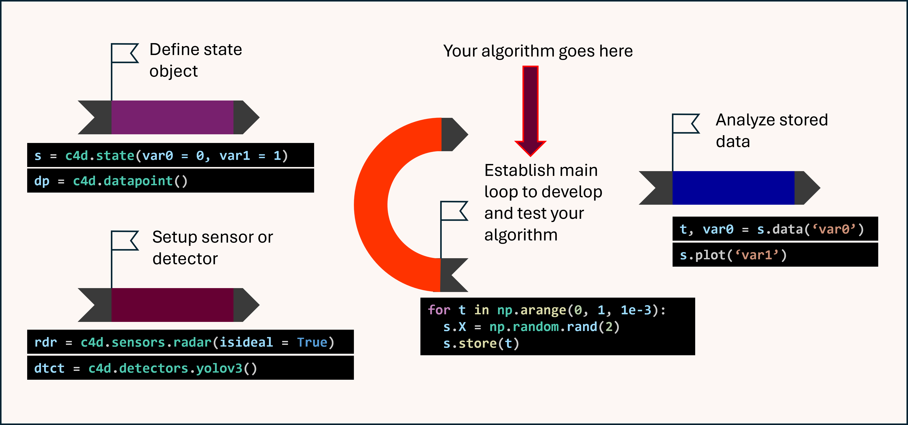

Getting Started#
Install the Framework
You can install c4dynamics via pip:
pip install c4dynamicsExplore the State Data Structure
Learn how to define and manipulate states, the core units of dynamic systems within the framework.
Utilize Functional Libraries
Incorporate sensors, detectors, and filters to build real-world systems.
Follow the Workflow
Deepen your understanding by reviewing the workflow outline:
 User Guide
Refer to the user guide to explore specific use cases and examples.
API Reference
Review the comprehensive explanations and examples in the API documentation.